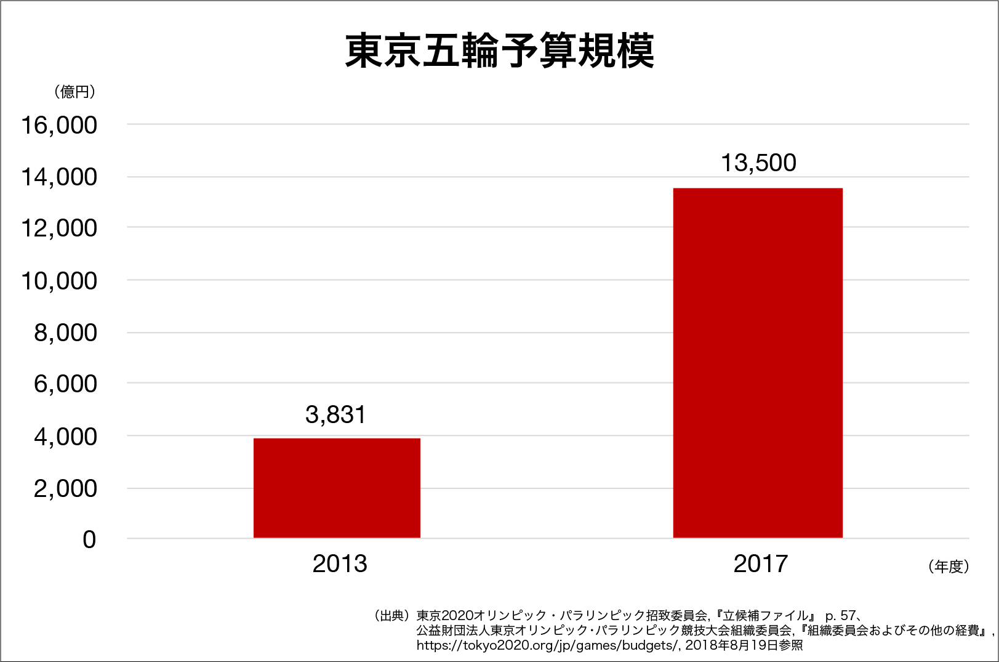

ごあいさつ
学生の皆さん、はじめまして！
私は、早稲田大学2年の松本 海月といいます。
いよいよ、2020年東京オリンピック・パラリンピック大会（以下、東京五輪）まであと2年です！
私も、このやりがい先進国・日本で「美しい五輪」が実現することを大変心待ちにしています。
その東京五輪において、東京五輪組織委員会の皆さんは、私たち学生に、やりがい溢れるボランティアの機会を与えてくださろうとしています。
日本には昔から、「若いうちの苦労は買ってでもしろ」ということわざがありますが、この貴重な機会を、組織委の皆さんはなんと無料で提供してくださるのです！！
こんな機会、ほかにあるでしょうか？
世界に誇る東京五輪でボランティアをすれば、やりがいや感動を得られるのはもちろんですが、その経験は今後の人生においても活かされ、私たちの身近なところでは、例えば就職にも直結するのは確実です。東京五輪のスポンサー企業には、日本・世界を代表する名だたる大企業が連なっています。
東京五輪でのエピソードをESや面接に盛り込めば、パナソニックだろうが野村證券だろうがリクルートだろうが朝日新聞だろうが、内定間違いありません！
そのボランティアの募集が、いよいよ9月から開始されます！
まだ、ボランティアについてよく知らない学生の皆さんもいるかもしれません。
そこで、同じ学生の立場から、学生の皆さんにボランティアの意義や魅力を伝えるため、このウェブサイトを制作しました。
このウェブサイトが、皆さんにとって、東京五輪ボランティアに応募するきっかけになればいいなと思っています。
東京五輪の概要
はじめに、東京五輪がいかに参加に値する素晴らしい大会かというのを簡単に説明したいと思います。

こちらは東京五輪の予算案のグラフです。最新の予算計画では、予算は約約1兆3,500億円にも上ります！
グラフから読み取れるように、当初、東京が五輪開催地に立候補したときは、3,800億円程度の予算を設定していました。しかし、そんなチンケな額じゃ、東京五輪は素晴らしいものになり得ませんし、経済効果も生まれませんよね。
1兆円以上ものお金があれば、必ずや、「クール・ジャパン」と世界から賞賛される日本の文化や先進技術を盛り込んだ、素晴らしい五輪が開催できるでしょう！
それら莫大なお金と、私たちボランティアの献身があれば、映画監督の山崎貴さんやアーティストの椎名林檎さんなどがプロデュースする開閉会式、聖火リレーなどエンターテイメント性溢れる、都市鉱山に眠る資源を有効活用するなどの環境への配慮、人権やダイバーシティを尊重した、日本だからできる、おもてなしに満ちた「美しい五輪」が完成するのです！
ボランティアの意義
ボランティアで得られるもの、それは、「やりがい」・「感動」・「絆」だと私は思います。
あくまでも私の考えに過ぎませんが、それらのボランティアの意義について、1つ1つ簡単に述べたいと思います。
やりがい
オリンピック・パラリンピックといえば、皆さんもご存知のとおり、4年に1度の「平和の祭典」です。
世界にとっての重大イベントなのはもちろん、特に開催国にとっては、国家の豊かさを世界に知らしめる絶好の機会です。
ボランティアになれば、五輪を通じて、私たちが生まれ育った愛すべき日本に、日本国民としての誇りをもって貢献することができます！
こんなやりがいに溢れることって、ありません。
感動
五輪では、選手たちの、人生をかけた戦いが繰り広げられます。
それは、見るものすべてに純粋な感動をもたらします。
私たちは、ボランティアとしてその戦いを支えることができます。
運が良ければ、間近に見ることもできるかもしれません。
そして、その戦いの裏には、選手だけでなく、このような大規模なイベントを成功させたいという、組織委員会に代表される運営者の皆さんの汗と涙もあるに間違いありません。
テレビで傍観しているだけでは、その感動の嵐に加わることはできませんが、ボランティアになれば、感動と一体化することができます。